огНастройка VPNОнлайн безопасность
Готовая виртуальная машина – это уникальное программное обеспечение, которое позволит вам создать отдельную операционную систему внутри вашего компьютера. Программа работает таким образом, чтобы созданный виртуальный компьютер получал полный функционал, в том числе и возможность подключаться к интернету, использовать VPN и защищать ваше подключение любым другим способом. Именно о повышенной безопасности, которую дает подключение виртуальной машины вместе с VPN, мы сейчас с вами и поговорим. В этой статье мы расскажем вам, как настроить виртуальную машину, как выбрать правильное программное обеспечение и какой VPN установить для максимальной безопасности и анонимности в сети.
Зачем используются виртуальные машины?
Виртуальная машина с Microsoft Windows или ОС Linux применяется для многих целей. Среди них такие возможности, как:
Какая виртуальная машина лучше?
Лучшая виртуальная машина – это субъективное понятие, которое может вызвать споры между профессионалами и разбирающимися в этом деле людьми. Для наших читателей мы составили список, состоящий из 3 лучших виртуальных машин, предоставляющих широкий набор функций.
Установка виртуальной машины Virtualbox – это популярный метод решения вышеописанных задач. Настройка виртуальной машины Virtualbox происходит в упрощенном интерфейсе, где всё интуитивно понятно.
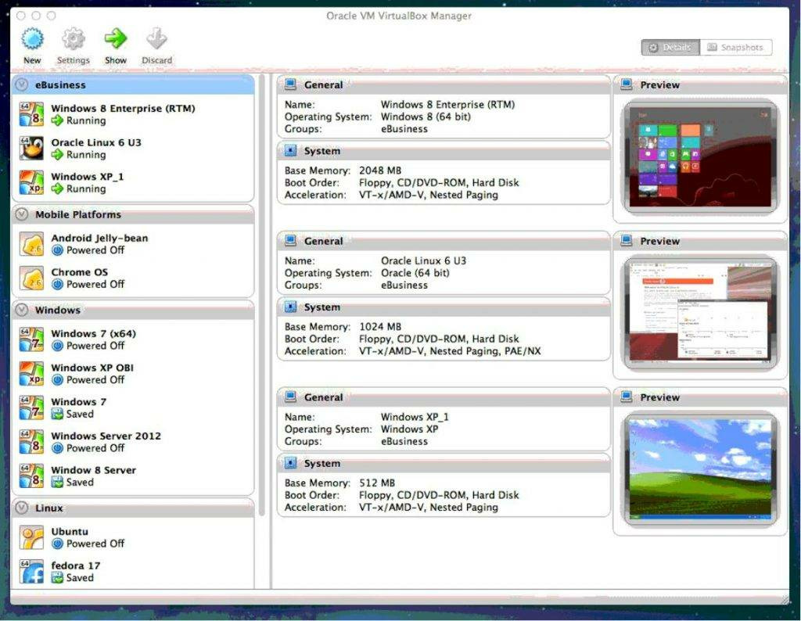
Виртуальная машина VMware Workstation Pro не менее популярна, чем предыдущая программа. Отличается платным форматом распространения и направленностью на коммерческое или профессиональное применение.
Меню здесь такое же удобное и интуитивно понятное, как и в Virtualbox. Даже у неподготовленного пользователя не возникнет вопросов о том, как поставить виртуальную машину, ведь программа сама проведёт его по всем нужным пунктам настройки.
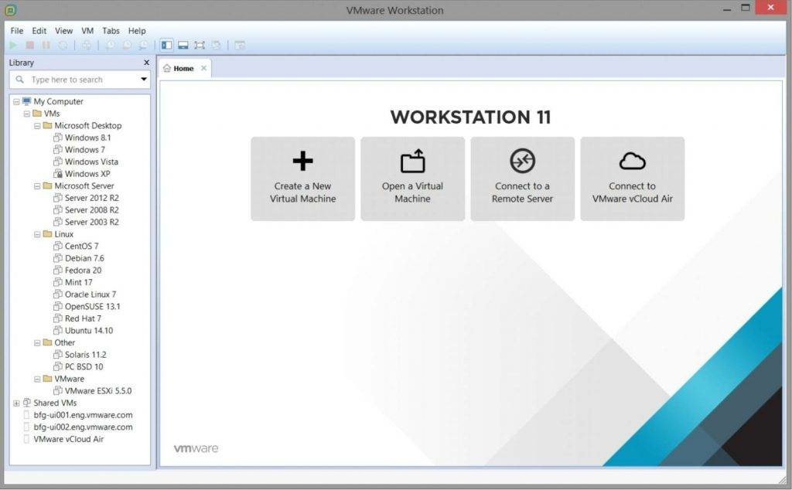
Microsoft Hyper-V – это виртуальная машина PC, которая встроена в большинство версий операционных систем Windows 7-10, за исключением домашней и начальной редакции. Чтобы создать виртуальную машину, нужно найти его в поиске и в окне под названием «действия» найти пункт «создать виртуальную машину».
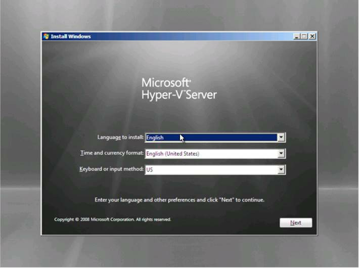
Как получить доступ к виртуальной машине и дать ей полную безопасность?
Сегодня мы рассмотрим подключение приватной сети к виртуальной машине Virtualbox на примере VPN от Whoer. Всего за 4.99$ в месяц пользователь получает быстрый доступ, высокий уровень анонимности в сети, защиту от провайдера и другие функции.
Чтобы подключить виртуальную машину к VPN, необходимо:
Перейти на страницу поисковой системы и ввести в строку Oracle VM VirtualBox.
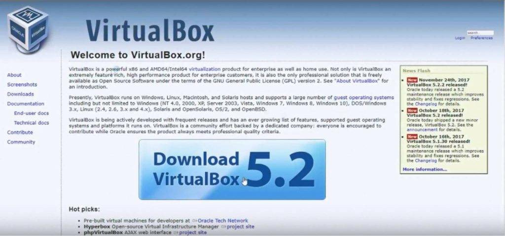
Перейти на главный сайт программы и скачать готовую виртуальную машину.
Запустите скачанный инсталлятор и установите программу. Если вы не разбираетесь в параметрах, оставьте все галочки по умолчанию.
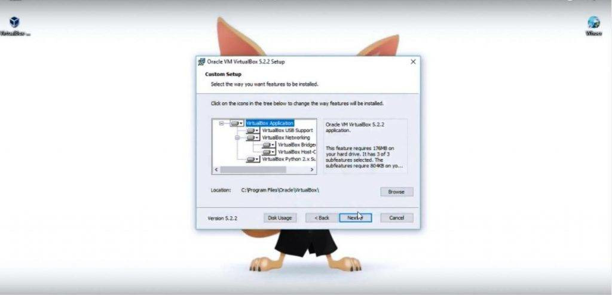
После того, как программа установилась, откройте её. Для создания виртуальной машины, в рабочем окне программы кликните на иконку «создать».
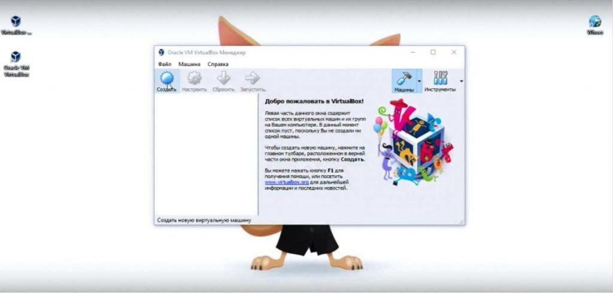
Выберите желаемое имя и введите его в первое поле. После этого необходимо выбрать тип ОС, которую вы планируете установить. Важно: указать необходимо ту версию системы, установочный диск или образ которой у вас есть на компьютере.
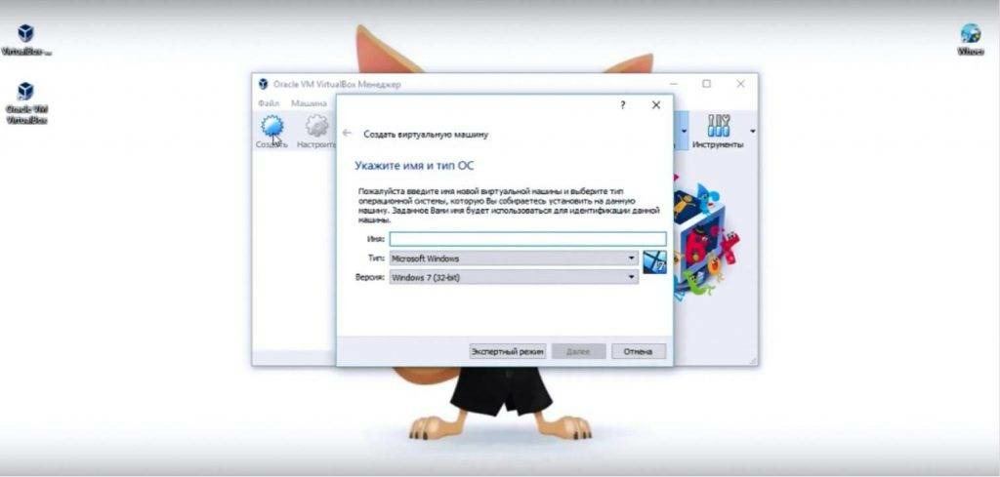
На следующем окне необходимо выбрать объем памяти, который вы хотите установить на виртуальной машине. Не давайте виртуальной системе оперативной памяти более, чем 50% от оперативки вашего ПК!
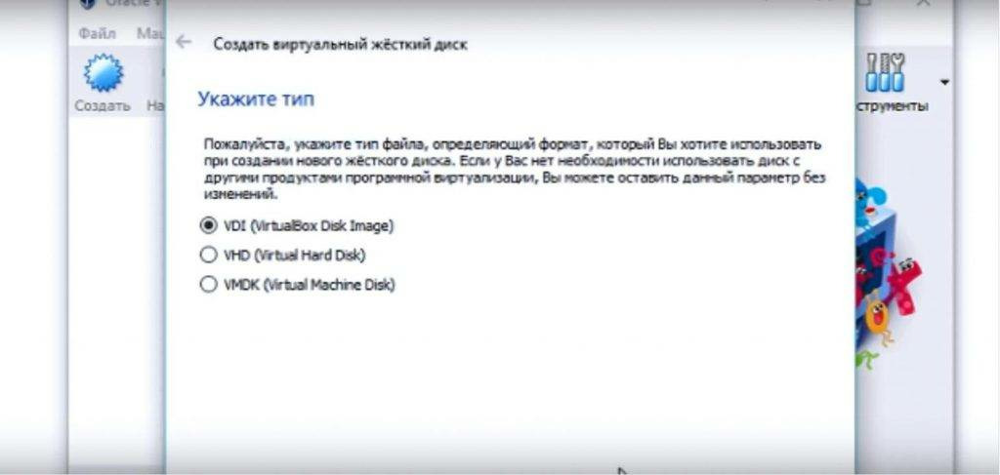
Далее необходимо создать виртуальный жёсткий диск, выбрав соответствующий параметр в следующем окне. После выбора пункта «Создать виртуальный жёсткий диск», появится окно, в котором необходимо выбрать параметры. Новичкам мы рекомендуем оставить стандартные параметры.
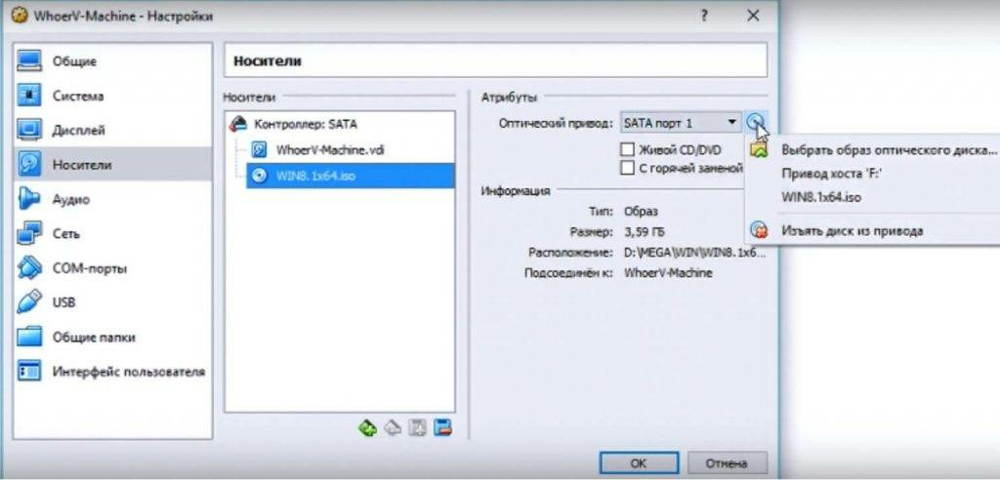
После создания виртуальной машины, в главном окне найдите вкладку «Настройки». Там расположен пункт «Носители», в интерфейсе которого необходимо выбрать путь к образу системы.
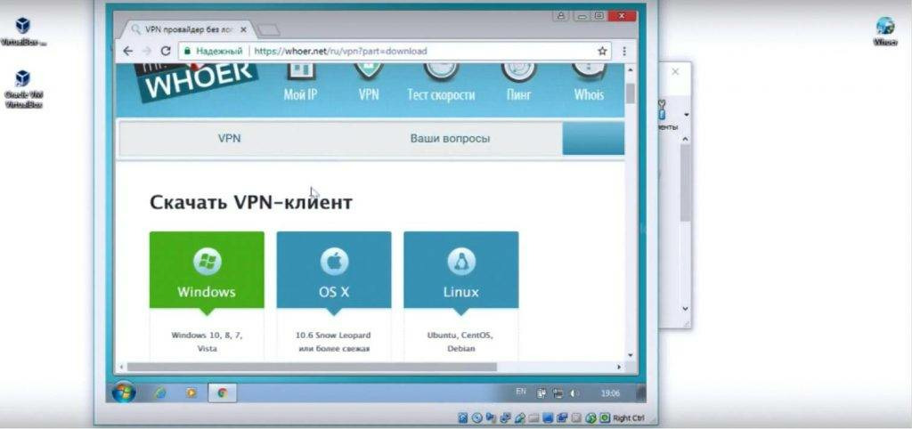
Запускаем собранную машину. Начнётся установка операционной системе. Здесь всё просто и полностью идентично стандартной установке Windows на реальном ПК.
Теперь займемся непосредственно установкой VPN на виртуальной машине. Для этого необходимо:
Перейти на официальный сайт Whoer VPN, где нужно выбрать подходящий клиент для вашей операционной системы.
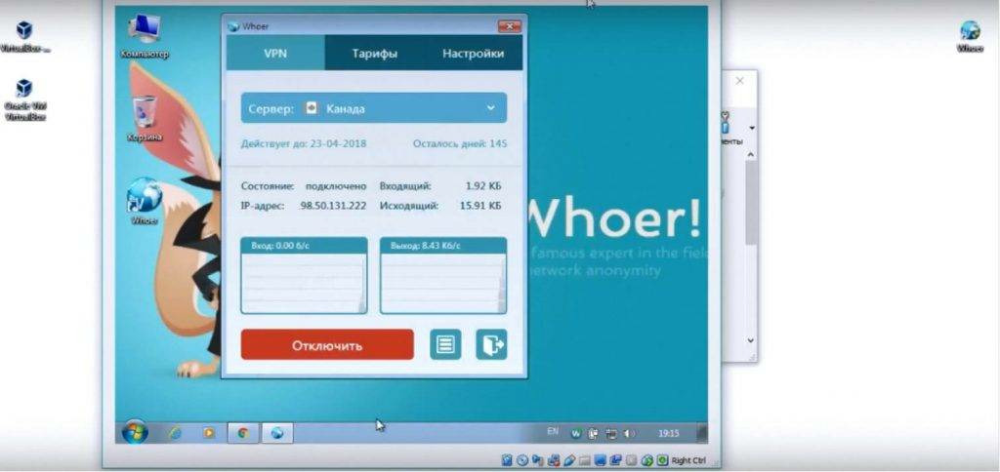
После скачивания клиента, переходим к его установке. Здесь всё предельно просто и ясно.
По окончанию установки, запускаем клиент. После введения ключа, купленного на сайте, VPN можно запустить. Делаем это на реальном ПК.
Готово! Работая через браузер виртуальной машины, вы получаете полную безопасность и анонимность в сети. Скорость соединения при этом сохраняется на комфортном уровне.
Сетевая анонимность в 21 веке крайне важна для сохранения неприкосновенности личных данных. Многие пользователи считают, что это сложный и требующий профессиональных познаний процесс, но это совершенно не так. Команда Whoer рассказала вам, как достичь полной анонимности в сети и пользоваться виртуальными машинами, которые позволят успешно защищать себя от вмешательства хакеров и провайдеров, пристально следящих за исходящим трафиком в интернете.
А какие способы защиты личной информации и анонимности в интернете используете вы? Расскажите о них в комментариях и репостните эту статью в социальные сети. Делитесь своими знаниями и нашими советами с друзьями и знакомыми, ведь сетевая безопасность – это актуальная проблема нашего времени.
Также смотрите наше видео, где Mr. Whoer за 4 минуты расскажет ещё больше интересной информации о виртуальных машинах, и покажет как подключить VPN к одной из них: